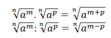
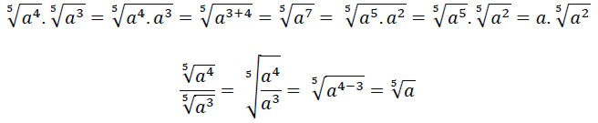
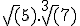
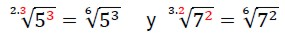
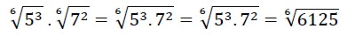
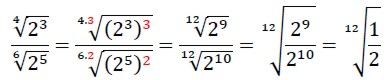

Multiplicación y división de radicales.
Caso 1: los índices son iguales.
Para multiplicar o dividir radicales de igual índice, se aplica la propiedad recíproca de la distributiva respecto de la multiplicación (o división):

Ejemplos:

Caso 2: Los índices son diferentes.
Para efectuar cualquier multiplicación o división de radicales, estos deben tener el mismo índice.
Para multiplicar o dividir radicales de distinto índice, se los debe reducir al mínimo común índice y luego aplicar las propiedades recíprocas de las distributivas de la radicación respecto de la multiplicación y división:
Ejemplo de reducción al mínimo común índice:
Para resolver el siguiente producto  obtenemos el Mínimo Común Múltiplo de 2 y 3 que es 6 y este será el índice de la raíz. Debemos obtener las expresiones equivalentes de la siguiente manera:

hacemos el producto:

Otro ejemplo:


En estos videos podrás ver ejemplos de cómo resolver el producto y la división de radicales de igual índice:
Obra publicada con Licencia Creative Commons Reconocimiento Compartir igual 4.0